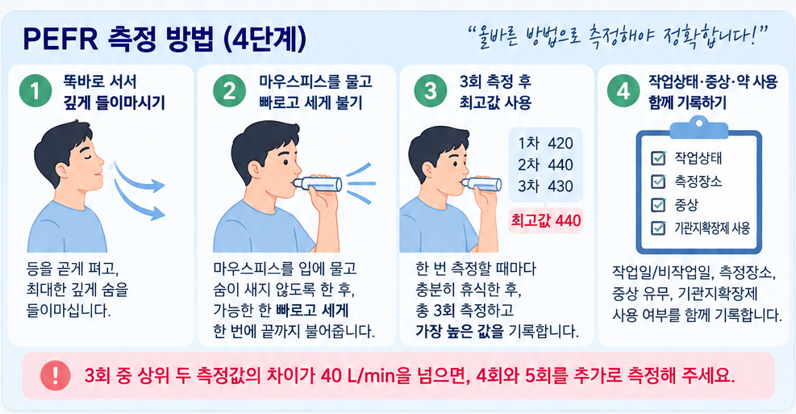

💨
PEFR은 이렇게 측정하세요
매번 같은 방법으로 측정하면 기록의 신뢰도가 높아집니다.

※ 그림은 측정 자세와 순서를 이해하기 위한 안내 이미지입니다.
기억해 주세요. 하루 4회 이상, 가능하면 기상 직후와 늦은 오후 또는 이른 저녁 측정을 포함해 주세요. PEF1·PEF2·PEF3 각각의 값을 입력하는 순간 해당 측정시간이 자동 기록되며, 필요하면 각 시간칸에서 직접 수정할 수 있습니다.
가능하면 흡입제 사용 전에 측정해 주세요. 이미 흡입제를 사용했다면 최소 15분 이후에 측정하고, 흡입제 사용 시간도 함께 기록해 주세요.
앱은 이렇게 사용합니다
① 처음 한 번만이름·회사·부서와 측정 시작일을 입력하고 측정기간 만들기를 누릅니다.
② 매일 측정 후오늘 기록에 PEF 1·2·3을 입력하면 각 값의 측정시간이 자동 기록되고 최고값도 자동 계산됩니다.
③ 작업 여부 기록각 측정마다 작업 중/비작업/휴일과 증상, 약 사용 여부를 선택합니다.
④ 3~4주 뒤 제출담당자에게 메일로 보내기를 눌러 제출용 CSV 파일을 공유하거나 저장한 뒤 메일에 첨부해 보냅니다.
대상자 정보
이 휴대폰 브라우저에 자동저장됩니다.
오늘의 측정
0 / 4
오늘 완료한 유효 측정 횟수
0완료 일수
0전체 측정
전체 진행률0%
오늘 기록 입력
한 번 측정할 때 3회 불고 가장 높은 값을 사용합니다. 상위 두 값의 차이가 40 L/min을 초과하면 2회 추가 측정이 필요하다는 경고가 표시됩니다.
지난 기록
측정 요약
0기록 일수
-작업일 평균
-비작업일 평균
평균값은 각 유효 측정의 최고 PEFR을 사용한 단순 요약입니다.
PEFR 추이
● 각 날짜의 일평균 PEFR · 작업일/비작업일을 구분하여 표시
일중변동률(D.V.)
D.V. = (일최고 − 일최저) / 일평균 × 100. 20% 이상인 날은 참고 표시합니다.
측정이 끝났나요?최종 제출 버튼을 누르면 제출용 CSV 파일을 만들고, 지원되는 휴대폰에서는 파일 공유창을 엽니다.
다른 저장 방법
담당자: kyeong85@comwel.or.kr